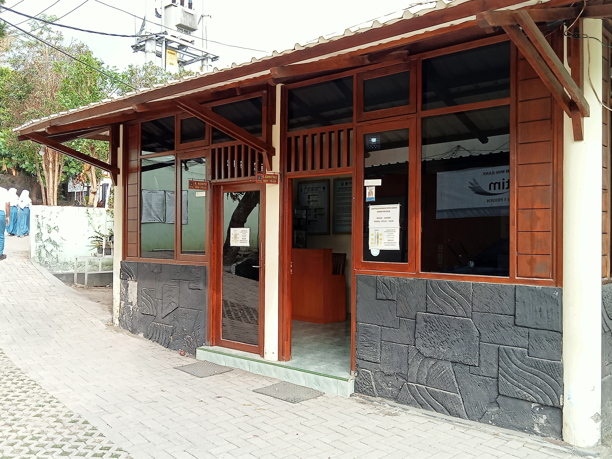
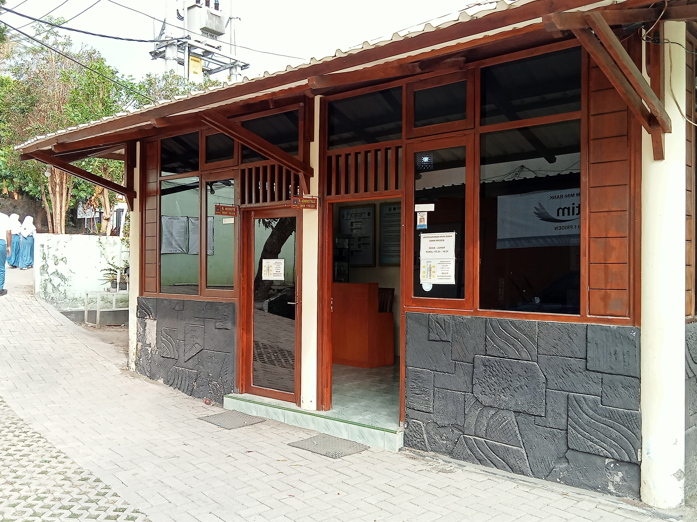
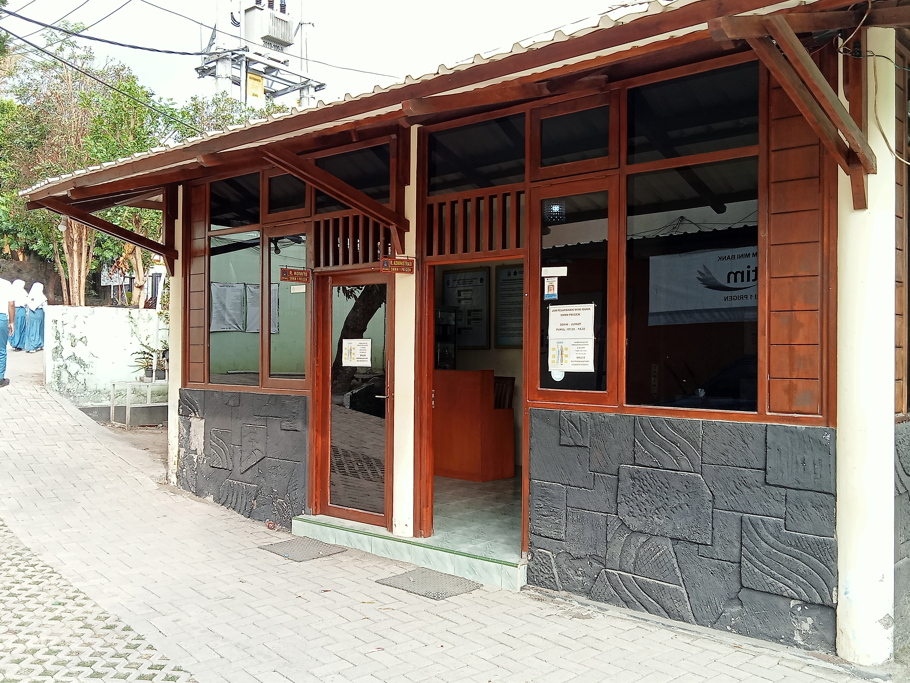
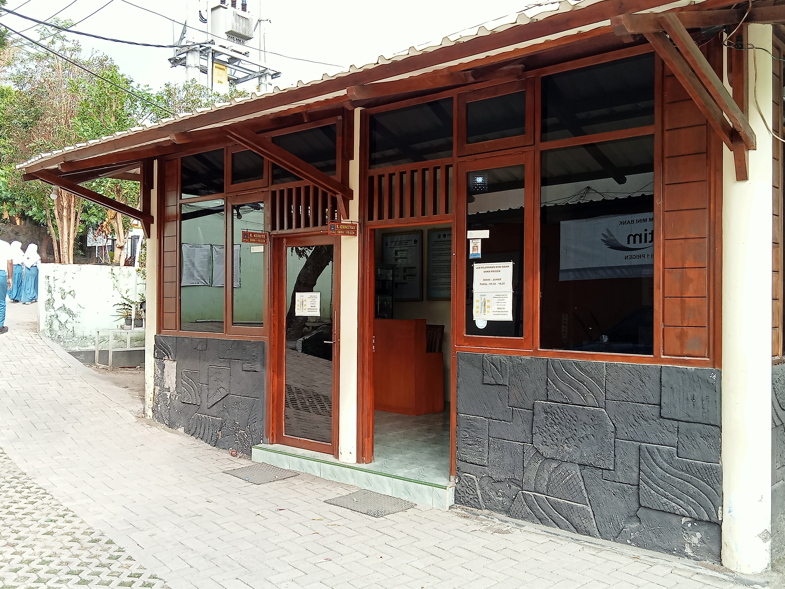

 

SMK Negeri Prigen didirikan pada tahun 2005 merupakan lembaga pendidikan yang terletak di Jl. Pecalukan Kelurahan Ledug Kecamatan Prigen Kabupaten Pasuruan Provinsi Jawa Timur. Lokasi SMKN Prigen merupakan kawasan wisata di daerah pegunungan antara gunung Arjuno dan gunung Penanggungan. Karena kawasan wisata inilah yang melatarbelakangi Dinas Pendidikan Kabupaten Pasuruan untuk mendirikan SMKN Prigen dengan kompetensi keahlian Jasa Boga dan Perhotelan
Pada tahun 2005, SMKN Prigen membuka pendaftaran hanya 2(dua) kompetensi keahlian yaitu Jasa Boga dan Perhotelan. Pada tahun 2007 SMKN Prigen menambah 1 (satu) kompetensi keahlian yaitu Multimedia. Pada tahun 2013 SMKN Prigen menambah lagi 3 (tiga) kompetensi keahlian yaitu Teknik dan Bisnis Sepeda Motor (TBSM), Teknik Komputer dan Jaringan (TKJ) dan Akuntansi.
Terwujudnya insan yang beriman dan bertaqwa kepada Tuhan Yang Maha Esa, terampil, berdaya saing tinggi, dan berbudaya lingkungan.
1. Mewujudkan warga sekolah yang taat beribadah.
2. Mewujudkan lulusan yang berkualitas, berprestasi, berakhlak tinggi dan bertakwa kepada Tuhan Yang Maha Esa.
3. Mewujudkan pembelajaran yang mendorong siswa untuk berfikir kritis, kreatif dan inovatif.
4. Mewujudkan pengalaman belajar dalam mengembangkan kompetensi keahlian dan iptek.
5. Mewujudkan pembelajaran yang berkarakter, mengembangkan perangkat pembelajaran yang terintegrasi muatan lingkungan hidup pada seluruh mata pelajaran.
6. Mewujudkan prestasi di bidang akademik dan non akademik.
7. Mewujudkan lulusan yang berdaya saing tinggi di dunia usaha dan dunia industri
8. Mewujudkan pengetahuan siswa terhadap budaya lingkungan
Perhotelan
Akutansi
Desain komunikasi Visual (Multimedia)
Teknik Komputer dan Jaringan
Teknik dan Bisnis Sepeda Motor
Kuliner (Tata Boga)